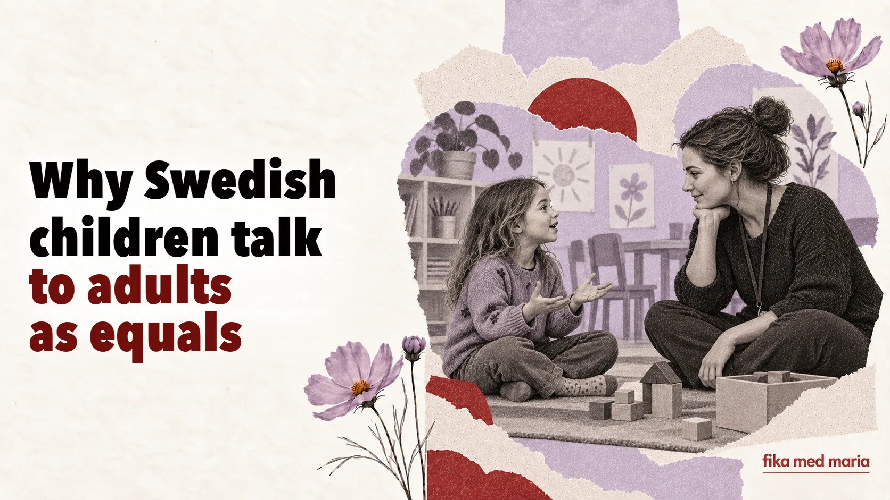

Why Swedish children talk to adults as equals

A child calls the preschool teacher by her first name. Argues with an adult. Asks why they have to do something. At first glance this can look like a lack of distance, or even of respect.
But in the Swedish context, an equal tone doesn’t mean equal responsibility. The adult stays the adult – it’s just that authority isn’t necessarily shown through formal address and commands.
Du doesn’t remove boundaries
Swedish children address preschool teachers, teachers and most other adults as du and often call them by their first names. The absence of a separate formal “you” creates less linguistic distance, but it doesn’t erase the roles.
A teacher can speak warmly and still set a clear boundary:
Jag hör att du är arg, men du får inte slå.
I hear that you’re angry, but you’re not allowed to hit.
The sentence contains both an acknowledgement of the emotion and a rule. Understanding feelings doesn’t mean allowing every kind of behaviour.
Children are told “why”
Instead of a short “because I said so”, a child often hears an explanation of the consequence:
Vi behöver gå nu för att hinna till förskolan i tid.
We need to leave now so that we get to preschool on time.
Du behöver ha hjälm för att skydda huvudet.
You need a helmet to protect your head.
An explanation doesn’t mean that every rule is put to a vote. It helps the child see the logic, not just the adult’s power.
Choice within set limits
A child may be offered a choice, but the adult sets the limits of that choice:
Vill du ta på dig den röda eller den blå tröjan?
Do you want to put on the red jumper or the blue one?
There’s no “not getting dressed at all” option here. This isn’t a step back from guiding the child – it’s a way of giving them influence where that’s safe.
Not “you’re bad”, but “you can’t do that”
In conversation, it’s important to separate the person from what they did:
Det var inte okej att ta leksaken från henne.
It wasn’t right to take the toy from her.
This is different from the judgement Du är dum – “You’re bad/stupid”. The first sentence names behaviour that can be changed. The second puts a label on the child themselves.
A child’s nej needs to be heard too
If a child says nej, the adult can find out why:
Jag hör att du inte vill. Kan du berätta varför?
I hear that you don’t want to. Can you tell me why?
This isn’t a promise to agree. Once the child has answered, the adult can say:
Jag förstår, men vi behöver ändå gå till läkaren.
I understand, but we still need to go to the doctor.
The child gets the right to their feelings and to a voice, but not responsibility for a decision too big for their age.
Phrases parents may hear at preschool
Hur har lämningen fungerat?
How did the morning goodbye go?
Han har varit delaktig i leken.
He took an active part in the game.
Hon behöver stöd i övergångarna.
She needs support during transitions between activities.
Vi vill gärna följa upp det här.
We’d like to come back to this and keep an eye on how the situation develops.
The last phrase doesn’t necessarily mean there’s a serious problem. But it’s a sign that the staff want to keep observing or continue the conversation.
How to ask a question if you disagree
Instead of staying silent or getting defensive straight away, you can say:
- Kan du ge ett konkret exempel? – Can you give a concrete example?
- Hur brukar ni hantera sådana situationer? – How do you usually handle situations like this?
- Vad kan vi göra hemma? – What can we do at home?
- När följer vi upp det här? – When will we come back to this?
That way the conversation becomes a shared search for a solution.
A child doesn’t want to stop playing, but you need to leave. Put together a three-part sentence: acknowledge the feeling, set the boundary, offer a small choice.
For example:
Jag förstår att du vill leka mer, men vi behöver gå nu. Vill du ta med bilen eller nallen?
Fika med Maria is preparing practical materials for communicating with preschools, schools, healthcare professionals and other parents. Cheat sheet for mums.
Are Swedish children allowed to do whatever they want?
No. The idea of children’s participation doesn’t mean there are no rules. Boundaries are often stated calmly, and the reason for them is explained.
What does delaktig mean?
Involved – someone who takes part and has a chance to influence things, as far as the situation allows.